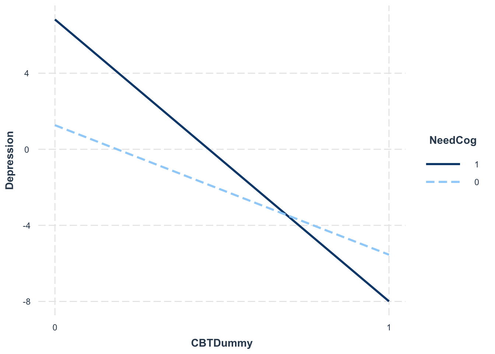
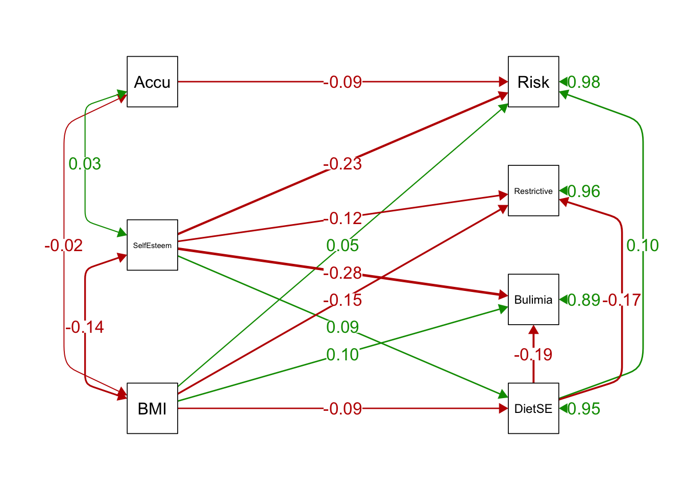
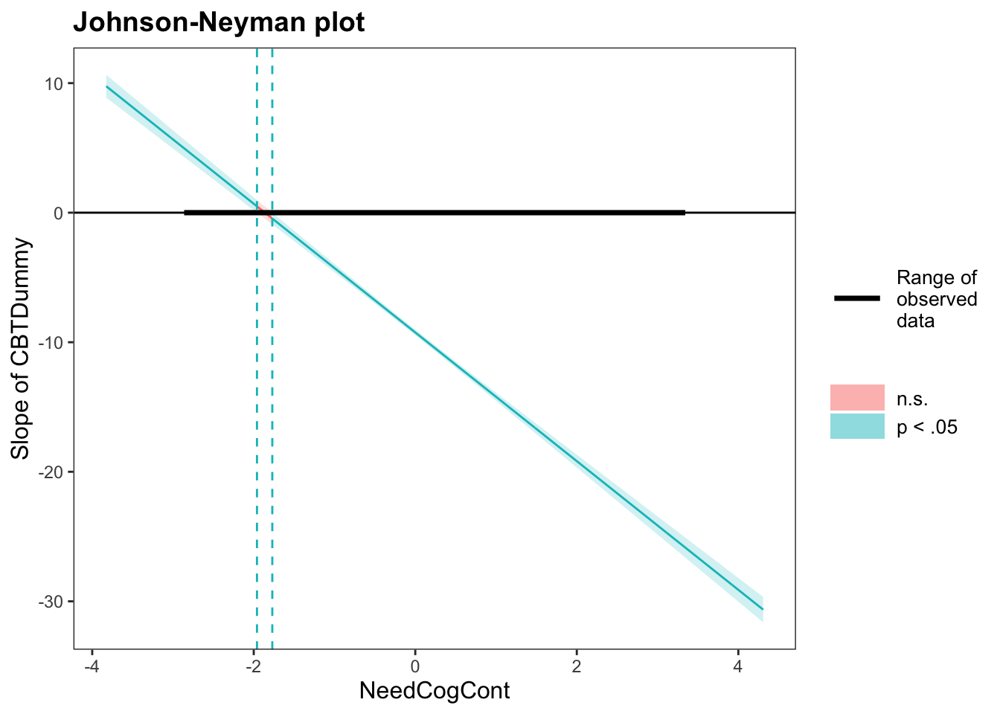

Chapter 5 Week5_1: Lavaan Lab 3 Moderation and Conditional Effects
In this lab, we will learn how to:
- how to perform moderation using regression and sem
- test the moderation effects of binary and continuous moderators
- visualize moderation effects.
5.1 Reading-In Datasets
Let’s read this dataset in. Change the file path to whatever directory where you saved the file!
cbtData <- read.csv(file = "dataInClass.csv", header = T)Let’s examine this dataset:
head(cbtData)## ID CBT CBTDummy NeedCog NegThoughts Depression NeedCogCont
## 1 1 CBT Treatment 1 0 -4.1453029 -5.802172 0.0182802
## 2 2 Information Only 0 1 2.1775218 5.496665 1.4238703
## 3 3 CBT Treatment 1 0 -1.5551349 -1.950566 -1.0151726
## 4 4 Information Only 0 0 0.1679286 2.655801 -0.8547152
## 5 5 Information Only 0 1 2.5103192 6.855488 0.6759705
## 6 6 CBT Treatment 1 0 -3.1626670 -2.968198 -0.9123426str(cbtData)## 'data.frame': 1000 obs. of 7 variables:
## $ ID : int 1 2 3 4 5 6 7 8 9 10 ...
## $ CBT : chr "CBT Treatment" "Information Only" "CBT Treatment" "Information Only" ...
## $ CBTDummy : int 1 0 1 0 0 1 1 1 1 0 ...
## $ NeedCog : int 0 1 0 0 1 0 0 0 0 0 ...
## $ NegThoughts: num -4.145 2.178 -1.555 0.168 2.51 ...
## $ Depression : num -5.8 5.5 -1.95 2.66 6.86 ...
## $ NeedCogCont: num 0.0183 1.4239 -1.0152 -0.8547 0.676 ...colSums(is.na(cbtData))## ID CBT CBTDummy NeedCog NegThoughts Depression NeedCogCont
## 0 0 0 0 0 0 0Notice that the first two columns are not model variables
- col 1 is a case ID variable.
- col 2 is a factor variable indicating CBT vs. Info-Only treatment.
Besides,
- col 5 is a variable that measures negative thoughts.
- col 7 is a continuous measure of NeedCog.
In the first part of this demo, we will work with three variables: CBTDummy, NeedCog, and Depression
Let’s look at the covariance matrix of the three variables
Multiple ways to accomplish this:
cov(cbtData[,-c(1,2,5,7)])## CBTDummy NeedCog Depression
## CBTDummy 0.250250250 -0.008508509 -2.3372519
## NeedCog -0.008508509 0.213732733 0.4371738
## Depression -2.337251860 0.437173798 31.9301427cov(cbtData[,c(3,4,6)])## CBTDummy NeedCog Depression
## CBTDummy 0.250250250 -0.008508509 -2.3372519
## NeedCog -0.008508509 0.213732733 0.4371738
## Depression -2.337251860 0.437173798 31.9301427cov(cbtData[,c("CBTDummy", "NeedCog", "Depression")])## CBTDummy NeedCog Depression
## CBTDummy 0.250250250 -0.008508509 -2.3372519
## NeedCog -0.008508509 0.213732733 0.4371738
## Depression -2.337251860 0.437173798 31.9301427let’s round this to two decimals
round(cov(cbtData[,c("CBTDummy", "NeedCog", "Depression")]), digits = 2)## CBTDummy NeedCog Depression
## CBTDummy 0.25 -0.01 -2.34
## NeedCog -0.01 0.21 0.44
## Depression -2.34 0.44 31.93What about the means?
round(apply(cbtData[,c("CBTDummy", "NeedCog", "Depression")], 2, mean), 2)## CBTDummy NeedCog Depression
## 0.50 0.31 -1.59Although they are not centered, we will proceed because CBTDummy and NeedCog are both binary.
5.2 Interactions in Regression Using lm()
In regression course we learned the lm() function, which stands for linear model.
To include an interaction in regression, simply use an : to create a product in the formula:
interactionModel <- lm(formula = Depression ~ CBTDummy + NeedCog + CBTDummy:NeedCog, data = cbtData)NOTE: R is very helpful, in that if you just put an asterisk *, it includes all lower-order terms!
interactionModel <- lm(formula = Depression ~ CBTDummy*NeedCog, data = cbtData)Let’s look at this interaction model:
summary(interactionModel)##
## Call:
## lm(formula = Depression ~ CBTDummy * NeedCog, data = cbtData)
##
## Residuals:
## Min 1Q Median 3Q Max
## -12.7785 -1.4280 0.0662 1.6252 6.8283
##
## Coefficients:
## Estimate Std. Error t value Pr(>|t|)
## (Intercept) 1.2684 0.1345 9.428 <2e-16 ***
## CBTDummy -6.8119 0.1880 -36.240 <2e-16 ***
## NeedCog 5.5586 0.2356 23.590 <2e-16 ***
## CBTDummy:NeedCog -8.0093 0.3384 -23.666 <2e-16 ***
## ---
## Signif. codes: 0 '***' 0.001 '**' 0.01 '*' 0.05 '.' 0.1 ' ' 1
##
## Residual standard error: 2.47 on 996 degrees of freedom
## Multiple R-squared: 0.8095, Adjusted R-squared: 0.809
## F-statistic: 1411 on 3 and 996 DF, p-value: < 2.2e-16Let’s interpret this … (In class)
5.3 Interactions in Lavaan
Now let us write the same model using lavaan.
Load the package:
library(lavaan)5.3.1 IMPORTANT NOTE
Because lavaan uses the * for assigning coefficient labels, this cannot be used to create interaction terms.
Instead, we have to create the product term in the dataset first, before running our model.
This is easy to do.
General Format:
existingDataFrame$variableName <- vectorToBeAssignedAsNewVariable
cbtData$CBTxNeedCog <- cbtData$CBTDummy * cbtData$NeedCogYou can name the product term arbitrarily:
cbtData$fourth <- cbtData$CBTDummy * cbtData$NeedCog
Let’s look at cbtData again:
head(cbtData)## ID CBT CBTDummy NeedCog NegThoughts Depression NeedCogCont CBTxNeedCog
## 1 1 CBT Treatment 1 0 -4.1453029 -5.802172 0.0182802 0
## 2 2 Information Only 0 1 2.1775218 5.496665 1.4238703 0
## 3 3 CBT Treatment 1 0 -1.5551349 -1.950566 -1.0151726 0
## 4 4 Information Only 0 0 0.1679286 2.655801 -0.8547152 0
## 5 5 Information Only 0 1 2.5103192 6.855488 0.6759705 0
## 6 6 CBT Treatment 1 0 -3.1626670 -2.968198 -0.9123426 0Now you have a new variable called CBTxNeedCog at the end.
5.3.2 Follow the equation of Y (Depression):
Depression = CBTDummy + NeedCog + CBTDummy*NeedCog + Disturbance
Let’s write some model syntax (with the labels):
interactionSyntax <- "
#Regression with interaction
#with labels
Depression ~ b1*CBTDummy + b2*NeedCog + b3*CBTxNeedCog
"let fixed.x=FALSE to print more lines:
inter_fit1 <- sem(model = interactionSyntax,
data = cbtData,
fixed.x = FALSE)If you’d like lavaan to print means and intercepts, we need to ask sem() to include the meanstructure:
inter_fit1 <- sem(model = interactionSyntax,
data = cbtData,
fixed.x =FALSE,
meanstructure = TRUE)summary(inter_fit1)## lavaan 0.6-10 ended normally after 41 iterations
##
## Estimator ML
## Optimization method NLMINB
## Number of model parameters 14
##
## Number of observations 1000
##
## Model Test User Model:
##
## Test statistic 0.000
## Degrees of freedom 0
##
## Parameter Estimates:
##
## Standard errors Standard
## Information Expected
## Information saturated (h1) model Structured
##
## Regressions:
## Estimate Std.Err z-value P(>|z|)
## Depression ~
## CBTDummy (b1) -6.812 0.188 -36.312 0.000
## NeedCog (b2) 5.559 0.235 23.637 0.000
## CBTxNedCg (b3) -8.009 0.338 -23.713 0.000
##
## Covariances:
## Estimate Std.Err z-value P(>|z|)
## CBTDummy ~~
## NeedCog -0.008 0.007 -1.163 0.245
## CBTxNeedCog 0.073 0.006 12.083 0.000
## NeedCog ~~
## CBTxNeedCog 0.101 0.006 16.630 0.000
##
## Intercepts:
## Estimate Std.Err z-value P(>|z|)
## .Depression 1.268 0.134 9.446 0.000
## CBTDummy 0.500 0.016 31.623 0.000
## NeedCog 0.309 0.015 21.147 0.000
## CBTxNeedCog 0.146 0.011 13.075 0.000
##
## Variances:
## Estimate Std.Err z-value P(>|z|)
## .Depression 6.076 0.272 22.361 0.000
## CBTDummy 0.250 0.011 22.361 0.000
## NeedCog 0.214 0.010 22.361 0.000
## CBTxNeedCog 0.125 0.006 22.361 0.000How does this compare to our regression model?
summary(interactionModel)##
## Call:
## lm(formula = Depression ~ CBTDummy * NeedCog, data = cbtData)
##
## Residuals:
## Min 1Q Median 3Q Max
## -12.7785 -1.4280 0.0662 1.6252 6.8283
##
## Coefficients:
## Estimate Std. Error t value Pr(>|t|)
## (Intercept) 1.2684 0.1345 9.428 <2e-16 ***
## CBTDummy -6.8119 0.1880 -36.240 <2e-16 ***
## NeedCog 5.5586 0.2356 23.590 <2e-16 ***
## CBTDummy:NeedCog -8.0093 0.3384 -23.666 <2e-16 ***
## ---
## Signif. codes: 0 '***' 0.001 '**' 0.01 '*' 0.05 '.' 0.1 ' ' 1
##
## Residual standard error: 2.47 on 996 degrees of freedom
## Multiple R-squared: 0.8095, Adjusted R-squared: 0.809
## F-statistic: 1411 on 3 and 996 DF, p-value: < 2.2e-16Same…but sem is more verbose.
5.4 Visial inspection of interactions
One way to plot the interactions is to use the interact_plot() function on the lm() object.
Install and load the package interactions first:
library(interactions)interact_plot(interactionModel, pred = "CBTDummy", modx = "NeedCog")
5.5 Centering Continuous Moderator
Now let’s work with the continuous measure of NeedCog directly:
mean(cbtData$NeedCogCont)## [1] 0.005925852sd(cbtData$NeedCogCont)## [1] 0.9974319NeedCogCont has been standardized already, which is helpful.
If not, we use scale() function to center a continuous variable
- Usage: scale(x, center = TRUE, scale = TRUE)
- If you just need to center a variable, you disable scale=FALSE
centeredNeedCog <- scale(cbtData$NeedCogCont, center = TRUE, scale = TRUE)
hist(centeredNeedCog)
For now, we will leave these variables as is in our dataset. But the scale() function is good to know.
5.6 Interactions in Lavaan (Continuous Moderator)
Just like for binary NeedCog moderator, we have to manually create a product term in the dataset first before running our model.
This is easy to do:
cbtData$CBTxNeedCogCont <- cbtData$CBTDummy * cbtData$NeedCogContLet’s look at cbtData again:
head(cbtData)## ID CBT CBTDummy NeedCog NegThoughts Depression NeedCogCont CBTxNeedCog CBTxNeedCogCont
## 1 1 CBT Treatment 1 0 -4.1453029 -5.802172 0.0182802 0 0.0182802
## 2 2 Information Only 0 1 2.1775218 5.496665 1.4238703 0 0.0000000
## 3 3 CBT Treatment 1 0 -1.5551349 -1.950566 -1.0151726 0 -1.0151726
## 4 4 Information Only 0 0 0.1679286 2.655801 -0.8547152 0 0.0000000
## 5 5 Information Only 0 1 2.5103192 6.855488 0.6759705 0 0.0000000
## 6 6 CBT Treatment 1 0 -3.1626670 -2.968198 -0.9123426 0 -0.9123426Time to write some lavaan model syntax (with labels):
interactionSyntax2 <- "
#Regression
Depression ~ b1*CBTDummy + b2*NeedCogCont + b3*CBTxNeedCogCont
"Let’s ask sem() to include the meanstructure:
inter_fit2 <- sem(model = interactionSyntax2,
data = cbtData,
fixed.x =FALSE,
meanstructure = TRUE)summary(inter_fit2)## lavaan 0.6-10 ended normally after 35 iterations
##
## Estimator ML
## Optimization method NLMINB
## Number of model parameters 14
##
## Number of observations 1000
##
## Model Test User Model:
##
## Test statistic 0.000
## Degrees of freedom 0
##
## Parameter Estimates:
##
## Standard errors Standard
## Information Expected
## Information saturated (h1) model Structured
##
## Regressions:
## Estimate Std.Err z-value P(>|z|)
## Depression ~
## CBTDummy (b1) -9.245 0.113 -82.096 0.000
## NeedCgCnt (b2) 3.305 0.079 42.064 0.000
## CBTxNdCgC (b3) -4.967 0.113 -43.943 0.000
##
## Covariances:
## Estimate Std.Err z-value P(>|z|)
## CBTDummy ~~
## NeedCogCont -0.020 0.016 -1.249 0.212
## CBTxNeedCogCnt -0.008 0.011 -0.764 0.445
## NeedCogCont ~~
## CBTxNeedCogCnt 0.480 0.027 18.055 0.000
##
## Intercepts:
## Estimate Std.Err z-value P(>|z|)
## .Depression 2.931 0.080 36.794 0.000
## CBTDummy 0.500 0.016 31.623 0.000
## NeedCogCont 0.006 0.032 0.188 0.851
## CBTxNeedCogCnt -0.017 0.022 -0.764 0.445
##
## Variances:
## Estimate Std.Err z-value P(>|z|)
## .Depression 3.166 0.142 22.361 0.000
## CBTDummy 0.250 0.011 22.361 0.000
## NeedCogCont 0.994 0.044 22.361 0.000
## CBTxNeedCogCnt 0.480 0.021 22.361 0.0005.7 Simple Slopes Analysis
pick-a-point (Rogosa, 1980) and plot the simple slopes of X at designated levels of Z:
mean(cbtData$NeedCogCont) #0## [1] 0.005925852sd(cbtData$NeedCogCont) # almost 1## [1] 0.9974319mean(cbtData$NeedCogCont) - sd(cbtData$NeedCogCont) # 1sd below the mean## [1] -0.991506mean(cbtData$NeedCogCont) + sd(cbtData$NeedCogCont) # 1sd above the mean## [1] 1.003358interactionSyntax3 <- "
#Regression
Depression ~ b1*CBTDummy + b2*NeedCogCont + b3*CBTxNeedCogCont #regression coefficient labels
#Simple Slopes
SSHigh := b1+b3*1 #Since sd(NeedCogCont) = approximately 1, this is +1 SD
SSMod := b1+b3*0 #at the mean of (centered) NeedCogCont
SSLow := b1+b3*(-1) #Low Simple Slope is at -1 (1 SD below since SD = 1)
"inter_fit3 <- sem(model = interactionSyntax3,
data = cbtData,
fixed.x =FALSE,
meanstructure = TRUE)
summary(inter_fit3)## lavaan 0.6-10 ended normally after 35 iterations
##
## Estimator ML
## Optimization method NLMINB
## Number of model parameters 14
##
## Number of observations 1000
##
## Model Test User Model:
##
## Test statistic 0.000
## Degrees of freedom 0
##
## Parameter Estimates:
##
## Standard errors Standard
## Information Expected
## Information saturated (h1) model Structured
##
## Regressions:
## Estimate Std.Err z-value P(>|z|)
## Depression ~
## CBTDummy (b1) -9.245 0.113 -82.096 0.000
## NeedCgCnt (b2) 3.305 0.079 42.064 0.000
## CBTxNdCgC (b3) -4.967 0.113 -43.943 0.000
##
## Covariances:
## Estimate Std.Err z-value P(>|z|)
## CBTDummy ~~
## NeedCogCont -0.020 0.016 -1.249 0.212
## CBTxNeedCogCnt -0.008 0.011 -0.764 0.445
## NeedCogCont ~~
## CBTxNeedCogCnt 0.480 0.027 18.055 0.000
##
## Intercepts:
## Estimate Std.Err z-value P(>|z|)
## .Depression 2.931 0.080 36.794 0.000
## CBTDummy 0.500 0.016 31.623 0.000
## NeedCogCont 0.006 0.032 0.188 0.851
## CBTxNeedCogCnt -0.017 0.022 -0.764 0.445
##
## Variances:
## Estimate Std.Err z-value P(>|z|)
## .Depression 3.166 0.142 22.361 0.000
## CBTDummy 0.250 0.011 22.361 0.000
## NeedCogCont 0.994 0.044 22.361 0.000
## CBTxNeedCogCnt 0.480 0.021 22.361 0.000
##
## Defined Parameters:
## Estimate Std.Err z-value P(>|z|)
## SSHigh -14.212 0.159 -89.281 0.000
## SSMod -9.245 0.113 -82.096 0.000
## SSLow -4.279 0.160 -26.755 0.000Now we have tests of the simple slopes at low, moderate, and high values of the moderator!
Along with significance tests.
5.8 Visual inspection of interactions (lm approach)
Interactions in Regression Using lm()
To include ab interaction in regression, simply use an * to create a product in the formula.
interactionModel2 <- lm(Depression ~ CBTDummy*NeedCogCont, cbtData)
summary(interactionModel2)##
## Call:
## lm(formula = Depression ~ CBTDummy * NeedCogCont, data = cbtData)
##
## Residuals:
## Min 1Q Median 3Q Max
## -5.7282 -1.1381 0.0649 1.2229 4.4762
##
## Coefficients:
## Estimate Std. Error t value Pr(>|t|)
## (Intercept) 2.93065 0.07981 36.72 <2e-16 ***
## CBTDummy -9.24546 0.11284 -81.93 <2e-16 ***
## NeedCogCont 3.30525 0.07873 41.98 <2e-16 ***
## CBTDummy:NeedCogCont -4.96674 0.11325 -43.85 <2e-16 ***
## ---
## Signif. codes: 0 '***' 0.001 '**' 0.01 '*' 0.05 '.' 0.1 ' ' 1
##
## Residual standard error: 1.783 on 996 degrees of freedom
## Multiple R-squared: 0.9008, Adjusted R-squared: 0.9005
## F-statistic: 3013 on 3 and 996 DF, p-value: < 2.2e-16pick-a-point (Rogosa, 1980) and plot the simple slopes of X at designated levels of Z:
library(interactions)
interact_plot(interactionModel2, pred = "CBTDummy", modx = "NeedCogCont")
5.9 JOHNSON-NEYMAN INTERVAL
interactions::johnson_neyman(interactionModel2, pred = "CBTDummy", modx = "NeedCogCont", alpha = 0.05)## JOHNSON-NEYMAN INTERVAL
##
## When NeedCogCont is OUTSIDE the interval [-1.96, -1.77], the slope of CBTDummy is p < .05.
##
## Note: The range of observed values of NeedCogCont is [-2.83, 3.31]
5.10 Exercise: How Framing Affects Justifications for Giving or Withholding Aid to Disaster Victims
For this exercise, we will use a real dataset in a study by Chapman and Lickel (2016).
This study was interested in examining the relation between Climate Change and Disasters: How Framing Affects Justifications for Giving or Withholding Aid to Disaster Victims?
Researchers hypothesizes that Framing a natural disaster as the product of climate change impacts attitudes toward disaster victims and humanitarian relief.
The predictor is X/Frame:
- Participants read a story about a humanitarian crisis caused by a drought in Africa.
- X = 1: Half of the participants were told that the drought was caused by climate change (the climate change condition)
- X = 0: The other half were not told anything about the specific cause of the drought and thus had no reason to believe it wasn’t the result of natural causes (the natural causes condition).
The outcome is Y/Donate:
- the participants’ willingness to donate to the victims was assessed using a set of questions.
- Responses were made on a set of 7-point scales, with higher scores reflecting a greater willingness to donate to the victims
The moderator is W/Skeptic:
- The belief whether climate change is a real phenomenon was also measured.
The moderation model looks at whether the attribution frame manipulation (X) might have had a different effect on people’s willingness to donate (Y) depending on their climate change skepticism (M)
5.10.1 Data Prep
The following example data are from Chapman and Lickel (2016)
Also example data in Chapter 12 of Hayes (2017)
Simply load the .rda into R:
load("disaster.rda")
head(disaster)## id frame donate justify skeptic
## 1 1 1 5.6 2.95 1.8
## 2 2 1 4.2 2.85 5.2
## 3 3 1 4.2 3.00 3.2
## 4 4 1 4.6 3.30 1.0
## 5 5 1 3.0 5.00 7.6
## 6 6 0 5.0 3.20 4.2str(disaster)## 'data.frame': 211 obs. of 5 variables:
## $ id : num 1 2 3 4 5 6 7 8 9 10 ...
## ..- attr(*, "format.spss")= chr "F8.0"
## ..- attr(*, "display_width")= int 6
## $ frame : num 1 1 1 1 1 0 0 1 0 0 ...
## ..- attr(*, "label")= chr "Experimental condition"
## ..- attr(*, "format.spss")= chr "F8.2"
## ..- attr(*, "labels")= Named num [1:2] 0 1
## .. ..- attr(*, "names")= chr [1:2] "naturally caused disaster" "climate change caused disaster"
## $ donate : num 5.6 4.2 4.2 4.6 3 5 4.8 6 4.2 4.4 ...
## ..- attr(*, "label")= chr "Positive attitudes toward donating"
## ..- attr(*, "format.spss")= chr "F8.2"
## ..- attr(*, "display_width")= int 9
## $ justify: num 2.95 2.85 3 3.3 5 3.2 2.9 1.4 3.25 3.55 ...
## ..- attr(*, "label")= chr "Negative justifications"
## ..- attr(*, "format.spss")= chr "F8.2"
## ..- attr(*, "display_width")= int 10
## $ skeptic: num 1.8 5.2 3.2 1 7.6 4.2 4.2 1.2 1.8 8.8 ...
## ..- attr(*, "label")= chr "Climate change skepticism"
## ..- attr(*, "format.spss")= chr "F8.2"If you are able to install package processR, you can also view its help page:
install.packages("processR")
library(processR)
data(disaster)
# take a look at the dataset:
?disasterYou probably have to go to https://www.xquartz.org/ to download and install X11, which is a server required by many R packages, including processR.
Now, disaster is a data.frame with 211 obs. of 5 variables:
- id
- frame: Experimental condition. 0 = naturally caused disaster, 1 = climate change caused disaster
- donate: Positive attitudes toward donating
- justify: Negative justifications
- skeptic: Climate change skepticism
5.10.2 Moderation with a binary moderator
Let me first manually create a binary moderator based on the continuous version of skeptic:
disaster$skeptic_b <- ifelse(disaster$skeptic<3, 0, 1) # low and high levels of skeptism of climate change
table(disaster$skeptic_b)##
## 0 1
## 112 99Next, can you test the moderation effect of skeptic_b on the path from frame to donate? (you can use either lm or lavaan)
Please interpret the coefficients in the model above and visualize the interaction using interact_plot().